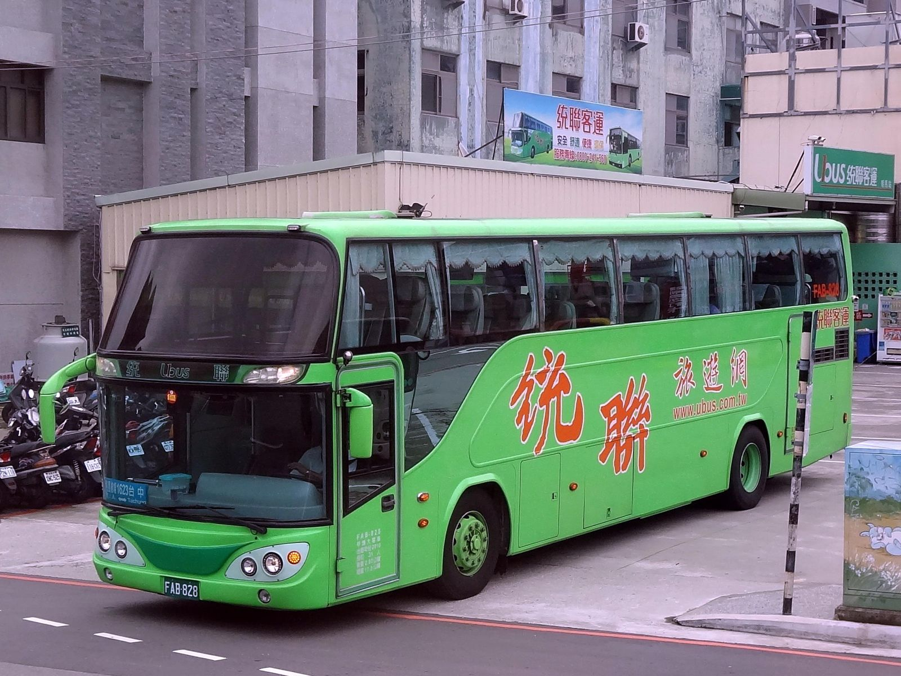
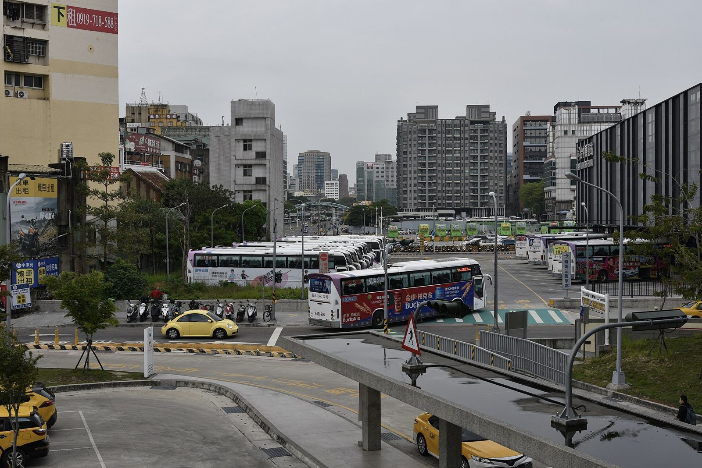

타오위안공항에서 타이중까지 버스, 매표소는 어디?
입국장을 나와 버스 승차장으로 가면 매표소가 있어요. 통롄 1623은 현장 구매만 되고, 국광 1860은 1터미널 매표소가 24시간 열어요.
게시 · 수정
타오위안공항에서 타이중까지는 국광(國光) 1860번과 통롄(統聯) 1623번 버스가 바로 가요. 승차장은 1터미널 B1층, 2터미널 1층의 버스 승차장이고 표는 그 앞 매표소에서 사요. 국광 1860 성인 요금은 NT$343~390(좌석 종류별, 2026년 11월 기준)이고, 원글 기준 타이중까지 약 2시간 10분 걸려요.
여행자 커뮤니티에 올라온 이동 후기를 공항·버스회사 공식 안내로 확인해 정리해봤어요.
01 · 두 노선 한눈에 보기
| 항목 | 국광 1860 | 통롄 1623 |
|---|---|---|
| 타이중 쪽 정류장 | 朝馬, 干城站 또는 國光客運臺中車站 | 朝馬 경유 타이중 시내 |
| 성인 요금 (2026년 11월 기준) | NT$343(4열 좌석)·NT$390(3열 좌석) | 방문 전 통롄 공식 요금표 확인 |
| 표 사는 곳 | 국광 매표소, 일부 예약 차편 있음 | 공항 매표소 현장 구매만 |
| 매표소 시간 | 1터미널 24시간, 2터미널 07:30~22:20 | 2터미널 6번 창구 06:00~23:50 |
공로국 버스 정보 사이트 요금표를 보면 1860번은 1터미널에서 타면 朝馬(臺灣大道)·干城站, 2터미널에서 타면 朝馬站(國光)·國光客運臺中車站으로 나뉘어 있어요. 내릴 곳이 정해져 있다면 표를 살 때 정류장을 한 번 더 확인하세요.
02 · 입국장에서 매표소 찾기
'Bus to City' 표지를 따라가요 원글에 따르면 입국장을 나와 버스 표지를 따라가면 매표소가 나와요.
1터미널은 B1층 공항 공식 안내 기준 1터미널 버스 승차장은 B1층이에요. 국광 매표소도 B1층에 있고 24시간 열어요.
2터미널은 1층 2터미널 버스 승차장은 1층이에요. 국광 매표소는 07:30~22:20, 통롄은 6번 창구에서 06:00~23:50에 표를 팔아요.
통롄 1623은 현장에서만 통롄 공식 안내에 따르면 입국 시간을 맞추기 어려워 타이중 방향은 편의점·인터넷 예매를 받지 않아요. 매표소 영업시간에 직접 사야 해요.

03 · 온라인으로 산 표는 매표소에서 교환
원글 작성자는 여행 앱에서 미리 산 버스표를 공항 매표소에서 실물 표로 바꿔서 탔다고 해요. 미리 사 둘 생각이라면 상품 안내에 적힌 교환 장소와 노선을 먼저 확인하세요. 통롄 1623은 위처럼 공항 현장 구매만 되니, 온라인 상품이 어느 버스회사 노선인지도 같이 봐야 해요.
04 · 타고 가는 동안 알아둘 것
약 2시간 10분 원글 기준 타이중까지 약 2시간 10분 걸렸어요. 도로 상황에 따라 달라져요.
맨 앞자리는 풍경이 좋아요 원글 작성자는 맨 앞자리에 앉아 바깥 풍경을 보며 갔다고 해요.
큰 짐은 기준을 확인 통롄 공식 안내에 따르면 1인 짐은 약 32인치 캐리어 1개 크기까지이고, 넘으면 짐 요금이 붙을 수 있어요.
통롄은 시내버스 1회 무료 통롄 안내에 따르면 당일 1623 표가 있으면 타이중(台中商旅·台中車站)에서 통롄 시내버스를 한 번 무료로 탈 수 있어요.

시간표는 요일마다 다른 차편이 있어요. 공로국 버스 정보 사이트에서 1860 시간표를, 통롄 공식 사이트에서 1623 시간표를 보고 비행기 도착 시간에 맞는 차편을 골라두세요.
05 · 자주 묻는 질문
타오위안공항에서 타이중 가는 버스는 몇 번이에요? 국광 1860번과 통롄 1623번이 공항에서 타이중까지 바로 가요.
버스표는 어디서 사요? 1터미널은 B1층, 2터미널은 1층 버스 승차장 앞 매표소에서 사요.
통롄 1623 표를 미리 인터넷으로 살 수 있어요? 아니요. 통롄 공식 안내 기준 타이중 방향은 공항 매표소 현장 구매만 돼요.
요금은 얼마예요? 국광 1860 성인 요금은 좌석 종류에 따라 NT$343 또는 NT$390이에요(2026년 11월 기준). 통롄 요금은 공식 요금표에서 확인하세요.
밤늦게 도착해도 표를 살 수 있어요? 1터미널 국광 매표소는 24시간 열어요. 2터미널 매표소는 시간이 정해져 있으니 공식 안내를 확인하세요.
타이중에서 먹을 곳은 타이중 맛집 지도에서 골라보세요. 밤늦게 도착한다면 타오위안공항 새벽 도착 교통, 1터미널에서 씻고 출발하려면 1터미널 무료 샤워실, 타이중공항으로 들어온다면 타이중공항 302번 버스를 참고하세요.
지도에서 타이중 맛집도 확인해보세요
도착해서 먹을 곳을 지도에서 골라보세요.